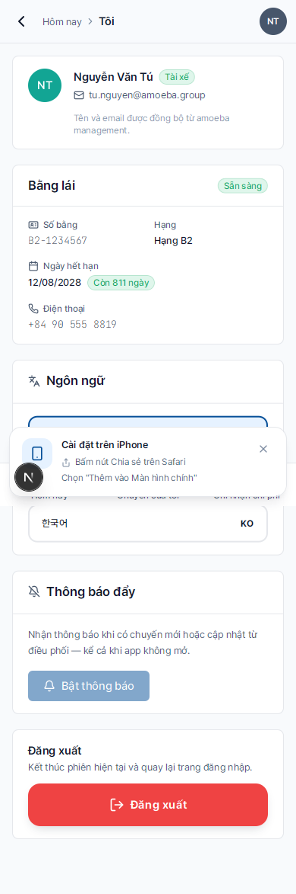

Tài xế — Tổng quan
- Đối tượng
- Tài xế công ty (mapped từ AMA
MEMBER) - Thiết bị
- Điện thoại (PWA) — tối ưu cho dùng trong xe, ngoài hiện trường
- Thời gian đọc
- ~3 phút
Là tài xế, công việc hàng ngày của bạn xoay quanh chuyến đi và chi phí phát sinh. Hệ thống được thiết kế để bạn thao tác nhanh trên điện thoại trong vài giây giữa các chuyến.
Bạn làm gì với hệ thống?
| Việc | Khi nào | Trang |
|---|---|---|
| Xem chuyến hôm nay | Đầu ca / mỗi khi mở app | Hôm nay |
| Xác nhận hoặc từ chối chuyến mới được gán | Khi nhận thông báo | Xác nhận chuyến |
| Bấm "Bắt đầu" khi xuất phát, "Kết thúc" khi tới nơi | Trước/sau mỗi chuyến | Bắt đầu/kết thúc |
| Ghi chi phí (xăng, dầu, đỗ, phí đường…) | Ngay sau khi chi tiêu (≤ 7 ngày) | Ghi chi phí |
| Xem cảnh báo bảo dưỡng xe của bạn | Khi có thông báo "Hết hạn thay dầu" | Cảnh báo bảo dưỡng |
Quy trình một chuyến đi điển hình
1. Admin tạo chuyến + gán bạn → bạn nhận thông báo đẩy
2. Bạn mở app → xem chi tiết chuyến → Bấm "Chấp nhận"
3. Đến giờ khởi hành → Bấm "Bắt đầu chuyến" (ghi số km hiện tại)
4. Trong chuyến → Nếu đổ xăng/đỗ xe → Vào "Chi phí" ghi ngay
5. Đến nơi → Bấm "Kết thúc chuyến" (ghi số km mới)
6. Chuyến đi tự chuyển trạng thái "Đã hoàn tất"Bạn KHÔNG cần làm gì?
- Không nhập tên khách hàng — Admin đã gán sẵn khi tạo chuyến
- Không tự chọn xe — Admin gán xe cụ thể (51K-238.91, …)
- Không phê duyệt chi phí của ai — đó là việc của Admin
- Không truy cập danh sách xe / tài xế / báo cáo — sidebar của bạn chỉ có Hôm nay, Chuyến của tôi, Chi phí, Cá nhân
Trang "Cá nhân"
Truy cập bằng cách bấm tab Cá nhân ở thanh đáy — xem thông tin hồ sơ, bằng lái, đổi ngôn ngữ, mở hướng dẫn sử dụng và đăng xuất.

Mẹo dùng hiệu quả
💡
Cài PWA về Màn hình chính — App sẽ chạy độc lập như app native, không cần mở trình duyệt. Xem hướng dẫn ở trang Cài đặt PWA.
⚠️
Ghi chi phí trong vòng 7 ngày. Sau 7 ngày, hệ thống tự khóa bản ghi — chỉ Admin mới sửa được. Ghi sớm để tránh phiền phức.